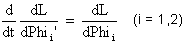

Infos zur Simulation Doppelpendel
- Phi1 ist der Winkel von der Vertikalen zum ersten (roten) Pendel. Phi2 der Winkel von der Vertikalen zum zweiten
(blauen) Pendel. (Diese Winkel sind im Bogenmass zwischen - Pi und +Pi).
- Grundlage zur Lösung der Bewegung des Doppelpendels ist die
Lagrange-Gleichung: Die Energieformen sind die potentielle Energie Epot(Phi1,Phi2) und die
kinetische Energie Ekin(Phi1,Phi2,Phi1',Phi2'). Die modifizierte innere Energie
des Systems ist L=Ekin-Epot.
Die Bewegungsgleichungen lauten also:

Nach Auflösen dieser Gleichungen erhält man zwei Differentialgleichungen
zweiter Ordnung in den Winkeln Phi1 und Phi2. Diese werden dann in vier
Differentialgleichungen erster Ordnung umgewandelt, die dann mit dem Runge-Kutta-Verfahren
gelöst werden können.
- Die Schrittweite h können Sie nicht grösser als 0.04 wählen. Die Lösung mit dem Runge-Kutta-Verfahren (ohne
Schrittweitenanpassung) wird sonst viel zu ungenau.
- Klicken auf Step zeigt den nächsten Schritt (mit Schrittweite h).
- Klicken auf Run/Stop lässt das Programm laufen. Erneutes Klicken auf Run/Stop hält es wieder an.
- Vergessen Sie nicht, nach einer Änderung zuerst den Start-Knopf anzuklicken. Die Return-Taste genügt nicht!
zum Programm Doppelpendel